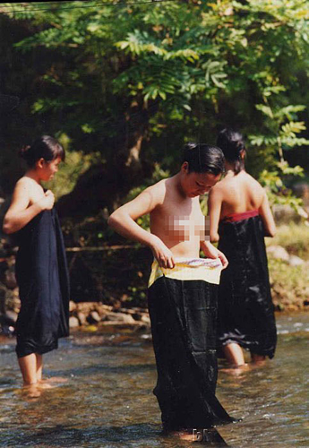

从贵州黔东南苗族、侗族自治州首府凯里出发,沿320国道行驶80多公里,便到了剑河温泉。
出发前,听朋友介绍,剑河温泉水和当地苗家特有的食品九香虫,一个能疗养治病,一个能补肾健体。当晚,我们即品尝到了九香虫,实际上就是俗称 “放屁虫”的一个品种。经油炸烹饪后确是香酥可口,系当地人作为招待贵宾时用的一道菜肴。饭后,大伙急不可待地更衣,去感受温泉的水。
新建造的大池在华清宾馆前的平地上,用彩色瓷砖砌成梅花形,直径约25米,水深1.5米左右,旁边另建一个长方形游泳池,长约30米, 宽15米,水深1.6米。在大池边沿,有6个进水孔,泉水冒着热气,从孔中汩汩流入池中,水面上氤氲之气,弥漫缭绕,雾水蒙蒙。池中沐浴者众多,在彩色灯光下,或嬉戏;或游泳;或坐在池沿谈天;或平躺在游泳圈上欣赏音乐。
我进入池中不一会,额头上便冒出许多细汗,全身的毛孔也都扩张开来迎接泉水的轻抚,润滑的水在皮肤上柔来抚去,使人真正感受到了“温泉水滑洗凝脂”的美妙。据了解:剑河温泉水系纯天然矿泉水,日流量在200吨以上,水温终年保持在38℃—50℃,泉水莹澈透明,四季不涸。内含硫、铁、钾、氡、钙等元素,其理化指标与法国著名的维希温泉相同,对人体肌肤有显著的保健疗效。
深秋的午夜,已有几分寒意,只好恋恋离开浴池,披着浴巾回到宾馆楼上。凭窗眺望,突然,眼前一幕让人惊讶不已————宾馆楼下5米处的稻田附近,有一简易水泥砌成的浴池,昏黄的灯光下,池中几个男人赤身裸体,一边谈笑,一边洗浴。更有甚者,离男池不到40米处,也是一水泥砌成的池中,几个女人,也一丝不挂的在洗浴,还不时地站在池边梳头、晾衣,其旁若无人的自然神态,实在让人对当地苗族刮目相看。
在我的印象中,我国只有重庆和云南的少数地方有裸浴习惯,想不到贵州剑河温泉的苗族也裸浴。经了解:原来,当地的老百姓千百年来一直流传着裸浴风俗,附近各个村寨的苗族,不论男女老幼特别爱干净、讲卫生。有的人几乎天天都洗浴。每年苗族的“摇马郎”节前,方圆几十里内的苗族青年男女,纷纷赶到温泉裸身洗浴,把自己打扮得漂漂亮亮,晚上好参加活动,寻找意中人。
当地人的道德观念很强,在老人们的印象里,多少年来,此地从未因男女裸浴而发生过违背道德的事情。近几年来,外地人来这里搞开发,修建了宾馆浴池,来温泉疗养和旅游的人日渐增多,有的还怀着好奇心窥视,可他们裸浴的习惯依然如旧,不管是白天或晚上洗浴,从不回避。当地人虽不知温泉水里会有哪些对人体有益的元素,可他们从来都相信温泉的水是老天赐给他们的圣水,不但能洗衣物,而且还能治病。长期生活在这里的人,不管是小孩、青年或老人,他们的皮肤都很白嫩。故此,逢年过节,他们总会在泉水涌出处烧上几炷香,拜上几拜。